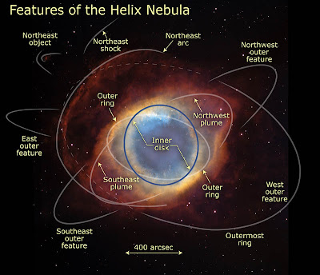
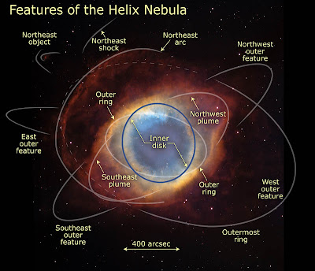

, 
, 
La nebulosa de la Hélice, o también conocida como NGC 7293 es una nebulosa que se encuenta a unos 680 años luz de distancia. Esta es una enana blanca que basada en su ritnmo de expansión tendrá aproximadamente 10600 años.
Entre las nebulosas planetarias tenemos algunas como: